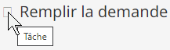

Une CSS peut générer du texte et des icône au moyen des pseudo-classes ::before et ::after. Cependant, les DACW 2.1 ne permettent pas d’utiliser du contenu non décoratif généré par des feuilles de style en cascade (CSS), car il peut être écrasé par des feuilles de style d’utilisateur (utilisées par des utilisateurs malvoyants), il manque un rôle, et il est invisible pour la fonctionnalité de recherche du navigateur; voici, entre autres, les raisons évoquées dans le document defense of WCAG Failure F87. Cela dit, il existe un scénario d’utilisation pour du texte supplémentaire généré par des feuilles de style en cascade ainsi qu’une technique généralement accessible pour les icônes d’information.
Veuillez suivre les pratiques exemplaires suivantes en présence d’un contenu généré par des feuilles de style en cascade :
aria-hidden="true".mark, del, ins et s aux utilisateurs de lecteur d’écran.<span>, et :
aria-hidden.title.<span> , masqué visuellement avec la classe CSS de la BOEW .wb-inv.Cette approche diffère du modèle d’icônes du Guide de style de la BOEW du fait de l’ajout des attributs title et aria-hidden. Elle ne tient pas compte des besoins des utilisateurs de clavier malvoyants.
Les DACW 2.1 proposent également une technique d’icônes informatives CSS, ARIA24 : Semantically identifying a font icon with role="img", mais elle nécessite une déclaration de style particulière dans la feuille de style de l’utilisateur, déclaration conçue pour protéger la déclaration de la famille de polices de l’icône contre l’écrasement. Bien que cela ne soit pas mentionné dans les DACW 2.1, l’utilisation de la technique ARIA24 suppose que l’on fasse connaître cette technique aux utilisateurs malvoyants. De même, le document defense of WCAG Failure F87 laisse pensé que la solution ARIA24 ne dispose pas de la sémantique nécessaire.
Il n’existe pas de technique idéale pour les polices d’icônes générées par des feuilles de style en cascade.
Les rôles de l’élément <mark> et des éléments rédactionnels <del>, <ins> et <s> ne sont pas déclarés par les lecteurs d’écran. Pour signaler leur présence aux utilisateurs de lecteur d’écran, un texte visuellement masqué généré par CSS signale le début et la fin de chaque rôle.
CSS
Début du code
mark::before { content: " [mise en évidence du début] "; }
mark::after { content: " [mise en évidence de la fin] "; }
del::before { content: " [suppression du début] "; }
del::after { content: " [suppression de la fin] "; }
ins::before { content: " [insertion du début] "; }
ins::after { content: " [insertion de la fin] "; }
s::before { content: " [début d’un texte biffé] "; }
s::after { content: " [fin d’un texte biffé] "; }
/* masque visuellement le contenu généré */
mark::before, mark::after,
del::before, del::after,
ins::before, ins::after,
s::before, s::after {
clip-path: inset(100%);
clip: rect(1px, 1px, 1px, 1px);
height: 1px;
width: 1px;
overflow: hidden;
position: absolute;
white-space: nowrap;
}Fin du code
Billet de blogue d’Adrian Roselli F87: CSS Generated Content and WCAG Conformance. 24 février, 2019.
Dans cet exemple, l’icône de marteau Font Awesome est utilisée pour représenter une tâche.
<span> avec les classes .fas et .fa-hammer affiche l’icône par l’entremise d’une pseudo-classe de CSS, :before.title contient une infobulle pour les utilisateurs de souris, « Tâche ».aria-hidden="true" cache l’élément aux lecteurs d’écran, car leur support de l'attribut title est incohérent.<span> visuellement masqué qui porte le nom « Tâche », et qui se déclare sur tous les lecteurs d’écran.L'exemple commence
Tâche Remplir la demande
L'exemple finit
Si leurs feuilles de style personnalisées écrasent la déclaration font-family de l’icône, les utilisateurs de souris malvoyants peuvent accéder au nom de l’icône en survolant le carré du paramètre fictif, ce qui active l’infobulle de l’attribut title.

HTML
Début du code
<p>
<span class="fas fa-hammer" title="Tâche" aria-hidden="true"></span>
<span class="wb-inv">Tâche</span>
Remplir la demande
</p>
Fin du code
CSS
Début du code
.fa-hammer:before { content: "\f6e3"; }
.fas { font-family: "Font Awesome 5 Free"; }
.wb-inv {
clip: rect(1px,1px,1px,1px);
height: 1px;
margin: 0;
overflow: hidden;
position: absolute;
width: 1px;
}
Fin du code